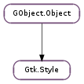

| static | new() |
| apply_default_background(cr, window, state_type, x, y, width, height) | |
| copy() | |
| detach() | |
| get_style_property(widget_type, property_name, value) | |
| has_context() | |
| lookup_color(color_name) | |
| lookup_icon_set(stock_id) | |
| render_icon(source, direction, state, size, widget, detail) | |
| set_background(window, state_type) |
| Name | Type | Flags | Description |
|---|---|---|---|
| context | Gtk.StyleContext | r/w/c | Gtk.StyleContext to get style from |
| Name | Parameters | Return | Description |
|---|---|---|---|
| realize | Emitted when the style has been initialized for a particular visual. Connecting to this signal is probably seldom useful since most of the time applications and widgets only deal with styles that have been already realized. | ||
| unrealize | Emitted when the aspects of the style specific to a particular visual is being cleaned up. A connection to this signal can be useful if a widget wants to cache objects as object data on Gtk.Style. This signal provides a convenient place to free such cached objects. |
| Name | Type | Access |
|---|---|---|
| attach_count | int | r |
| black | Gdk.Color | r |
| font_desc | Pango.FontDescription | r |
| parent_instance | GObject.Object | r |
| private_font_desc | Pango.FontDescription | r |
| rc_style | Gtk.RcStyle | r |
| visual | Gdk.Visual | r |
| white | Gdk.Color | r |
| xthickness | int | r |
| ythickness | int | r |
Bases: GObject.Object
A Gtk.Style object encapsulates the information that provides the look and feel for a widget.
In GTK+ 3.0, Gtk.Style has been deprecated and replaced by Gtk.StyleContext.
Each Gtk.Widget has an associated Gtk.Style object that is used when rendering that widget. Also, a Gtk.Style holds information for the five possible widget states though not every widget supports all five states; see Gtk.StateType.
Usually the Gtk.Style for a widget is the same as the default style that is set by GTK+ and modified the theme engine.
Usually applications should not need to use or modify the Gtk.Style of their widgets.
| Parameters: |
|
|---|
| Returns: | a copy of style |
|---|---|
| Return type: | Gtk.Style |
Creates a copy of the passed in Gtk.Style object.
Detaches a style from a window. If the style is not attached to any windows anymore, it is unrealized. See Gtk.Style.attach ().
| Parameters: |
|
|---|
Queries the value of a style property corresponding to a widget class is in the given style.
| Returns: | True if style has a Gtk.StyleContext |
|---|---|
| Return type: | bool |
Returns whether style has an associated Gtk.StyleContext.
| Parameters: | color_name (str) – the name of the logical color to look up |
|---|---|
| Returns: | True if the mapping was found. |
| Return type: | bool, color: Gdk.Color |
Looks up color_name in the style’s logical color mappings, filling in color and returning True if found, otherwise returning False. Do not cache the found mapping, because it depends on the Gtk.Style and might change when a theme switch occurs.
| Parameters: | stock_id (str) – an icon name |
|---|---|
| Returns: | icon set of stock_id |
| Return type: | Gtk.IconSet |
Looks up stock_id in the icon factories associated with style and the default icon factory, returning an icon set if found, otherwise None.
| Parameters: |
|
|---|---|
| Returns: | a newly-created GdkPixbuf.Pixbuf containing the rendered icon |
| Return type: |
Renders the icon specified by source at the given size according to the given parameters and returns the result in a pixbuf.
| Parameters: |
|
|---|
Sets the background of window to the background color or pixmap specified by style for the given state.